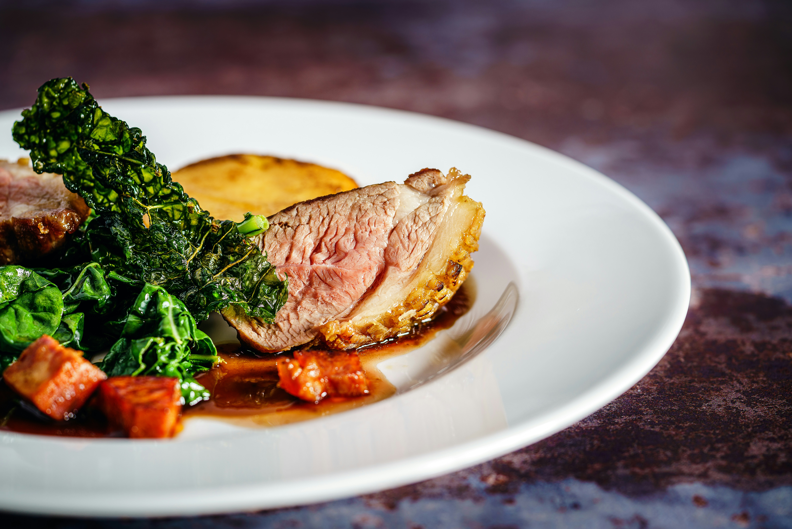

Sylo's Sunday Roast

Enter england with their staple Sunday Roast once you go roast you will Never think about any other meal taking up your sunday afternoons.
Ingredients:
- 4 x white potatoes,
- 2 x Carrots
- Gravy Base (14g),
- 1 x free range egg,
- Skin-on chicken thighs (320g),
- Dried thyme (0.5 tbsp),
- Blanched peas (160g),
Method:
-
Preheat the oven to 220°C/ 200°C (fan)/ gas 7, then take your chicken out of the fridge, open the packet and let it air.
Heat a large, wide-based pan (preferably non-stick) over a medium-high heat.Pat your chicken dry with kitchen paper, and
season them on both sides with half your dried thyme (you'll use the rest later!) and a pinch of salt and pepper, then add
skin-side down and cook for 8-10 min or until the skins have browned and crisped.
-
While the chicken is cooking, peel your potatoes and chop into quarters. Add the chopped potatoes to a large heat-proof bowl
covered with cling film. Put the bowl in the microwave for 6-8 min or until tender. Line a baking tray (or two!) with baking
paper.
-
Meanwhile, fill 2 holes of a muffin tray per person with a small drizzle of vegetable oil (about 1 tsp per hole) and put it
in the oven to heat up.
Tip: No muffin tray? Fill a small oven-proof dish with a generous drizzle of vegetable oil to make one giant Yorkshire!
Combine 50ml [75ml] [100ml] milk with 2 tbsp [3 tbsp] [4 tbsp] flour and your egg[s] in a jug, then whisk in a generous pinch
of salt and pepper until smooth, this is your batter.
-
Once browned, transfer the crispy chicken, skin side up, to the baking tray[s].Add the chopped potatoes (reserve the bowl!) with
a drizzle of vegetable oil, the remaining dried thyme and a pinch of salt and pepper. Put the tray[s] in the oven for 18-20 min
or until the potatoes are golden and the chicken is cooked through (no pink meat!), this is your roast chicken and potatoes.
-
While the chicken is roasting, remove the muffin tray from the oven and carefully drizzle the batter evenly into the hot oil.
Return the tray to the oven for 18-20 min or until puffed up and golden, these are your Yorkshire puds.
-
Boil a kettle. Top, tail, and slice your carrot[s] into discs, on the diagonalAdd the carrot discs to a pot over a medium-high heat
with boiled water and cook for 8-10 min or until the carrots are tender. Once tender, drain and return to the pot to keep warm.
-
Once everything is nearly ready, reboil half a kettle. Add your blanched peas to the pot with a small knob of butter and a pinch of salt,
then return the pot to a low heat and cook until warmed through ‐ these are your buttered veg. Combine your gravy base with 100ml [150ml]
[200ml] boiled water in the reserved bowl, whisk thoroughly and put it in the microwave. Cook for 30-40 secs or until thickened and give
everything a good mix up (careful it may be hot!) ‐ this is your gravy. Serve the roast chicken and potatoes with the buttered veg and
Yorkshire puds to the side.
Drizzle over the gravy
Enjoy!
To go back home click here.